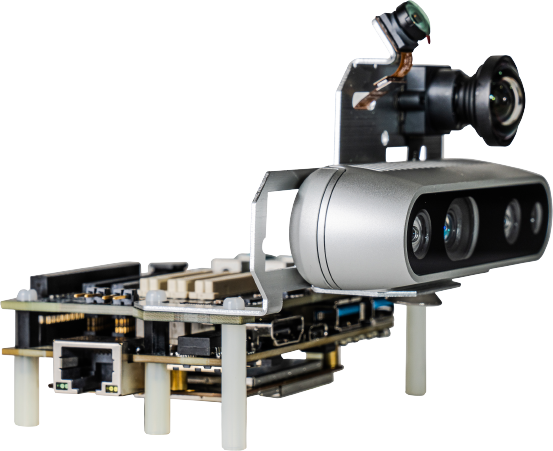
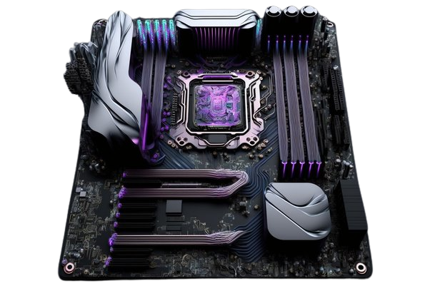
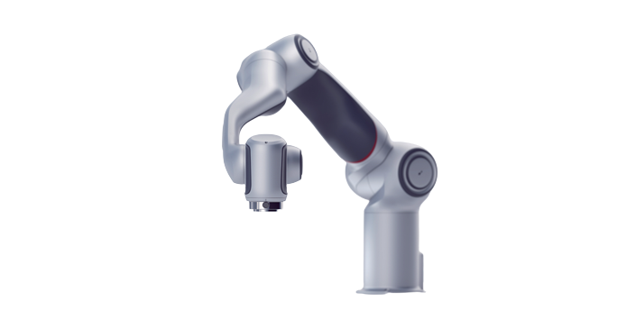

By Mike Oitzman | June 5, 2023
Relay2 delivery robot offers 2x payload, new elevator integrationThe redesigned Relay2 delivers twice the cargo capacity of earlier models while maintaining Relay’s sleek design.

By The Robot Report Staff | June 5, 2023
e-con adds multi-camera solutions for Qualcomm Robotics RB5 kitSolution enables developers to connect up to 6 cameras, either MIPI or GMSL2 or a combination of both, to enable imaging from multiple angles/perspectives from the RB5.

By Ted Larson | June 5, 2023
What does ChatGPT mean for robotics?OLogic's Ted Larson takes a closer look at the positives and potential
negatives ChatGPT and large language models could have on robotics.

By Sponsored Content | June 2, 2023
Your surgical robot can be more agileYou can give surgeons greater dexterity and control